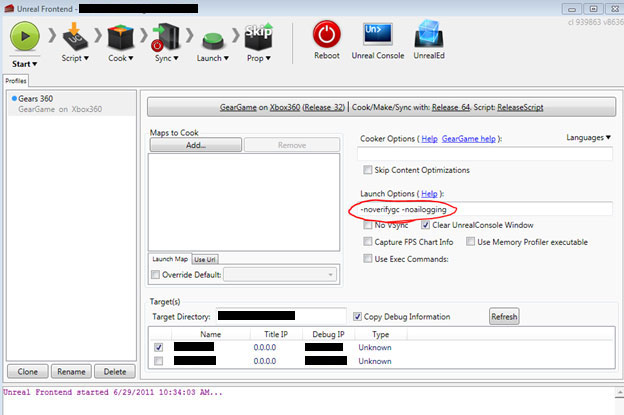

UDN
Search public documentation:
VFXOptimizationConceptsCH
English Translation
日本語訳
한국어
Interested in the Unreal Engine?
Visit the Unreal Technology site.
Looking for jobs and company info?
Check out the Epic games site.
Questions about support via UDN?
Contact the UDN Staff
日本語訳
한국어
Interested in the Unreal Engine?
Visit the Unreal Technology site.
Looking for jobs and company info?
Check out the Epic games site.
Questions about support via UDN?
Contact the UDN Staff
UE3 主页 > 粒子 & 效果 > 粒子系统 > 虚幻引擎 3 中的 VFX 优化 > VFX 优化：核心概念
UE3 主页 > FX 美术 > 虚幻引擎 3 中的 VFX 优化 > VFX 优化：核心概念
UE3 主页 > FX 美术 > 虚幻引擎 3 中的 VFX 优化 > VFX 优化：核心概念
VFX 优化：核心概念
辨别 GPU、渲染线程和游戏线程问题
- [[#LaunchGame]在您的控制台上启动游戏]]
- 点击选项卡并输入 'stat unit'

STAT PARTICLES 命令估算粒子在不同线程上花费的时间。

STAT PARTICLES 会列出与游戏线程和渲染线程相关的多个统计数据。 注意描画调用函数（渲染线程）和更新时间（游戏线程）。
定位与 Game Thread（游戏线程）相关的问题
ParticleTickStats 命令识别哪些系统是主要影响因素。
ParticleTickStats 命令有 3 个参数：
- Single - 该参数将会捕获一个单独的帧，然后写到一个文件
- Start - 该参数将开始捕获统计数据
- Stop - 该参数将结束统计数据，所以您可以看到一段持续时间的更新时间
[UE3 Directory]\[YourGame]\Profiling\PSTick-[sys time].csv
将这个电子表格划分为行和列，以此体现您的效果消耗
- Total Tick ms
- 更新所有 Particle System（粒子系统）实例所花费的时间总量
- Avg Tick ms
- 更新粒子系统的平均时间（更新总时间/更新数）
- Max Tick ms
- 粒子系统实例的最高更新时间。
- Ticks
- 粒子系统实例的数量
- Avg Active/Tick
- 在该粒子系统更新过程中处于激活状态的粒子平均数（粒子总数/更新数）
- Max Active/Tick
- 在该粒子系统更新过程中（在一个单独的实例中）处于激活状态的粒子最大数量
- 减少所使用的系统上的粒子发射数量。
- 减少场景中的粒子系统数量。
- 减少您的某些发射器的生命时间（计算粒子评估的时间量）。
- 检查诸如碰撞这样性能消耗高的计算，确保您所使用的设置是最佳设置，减少碰撞或发生碰撞的粒子/网格物体的数量。
- 如果需要，删除诸如碰撞、动态参数等等性能消耗高的计算。
- 如果可以，使用静态网格物体效果替换计算 Game Thread（游戏线程）的粒子效果。
- 在您的粒子系统上设置 Fixed Bounds（固定的边界），这样您就不需要在每一帧计算它们。
- 增加 LodDistanceCheckTime，这样您就不需要经常检查 LOD（针对的是将 LODMethod 设置为自动的循环效果。）
在控制台上使用 Unreal Front End 启动编译版本
可以在您的项目 binaries 文件夹中找到 Unreal FrontEnd[UE3 Directory]\Binaries\UnrealFrontend.exe
Unreal Front End 是一个 GUI，它允许任何规程可以快速烘焙和部署一个编译版本或关卡，在目标平台上查看本地数据。还可以将 Unreal Front End 作为您的项目的启动点使用，其中含有连接到编辑器和许多其他工具的链接。 请参阅UnrealFrontend了解更多有关使用这个工具的信息。
对于效果性能，我们将会在启动游戏的时候集中使用两个参数，相对准确地了解游戏运行状况。 在 Launch Option（启动选项）框中有 -novsync、-noverifygc 和 -noailogging 命令。
-novsync 禁用了垂直同步（锁定 fps @ 30），所以我们可以看到场景中消耗性能情况，-noverifygc 禁用了频繁产生可见停顿的周期垃圾回收，而 -noailogging 禁用了会大幅降低游戏速度的 ai logging，aiLogging 和垃圾回收在背景中运行，启用它们会降低性能。 禁用这些功能将会在最终发行版本中可以再现更接近真实的帧速率，减少磁盘加载时间。

在一个调试版本中进行这个测试的任何部分时，重点是要记住在最终发行版本中看不到的调试模式中运行游戏时是有消耗的。使用诸如 stat overlay（统计数据叠加）这样的工具时都是有消耗的，而且会使您的结果出现轻微的偏差。